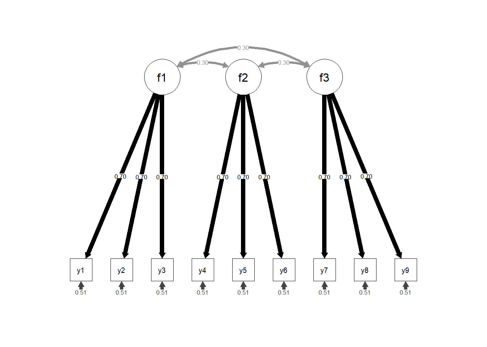
The Robustness of Test Statistics to Nonnormality and Specification Error in Confirmatory Factor Analysis: A Replication
Authors:
Jeremy Miles (Google, Los Angeles, USA)
Alexander Miles (University of Southern California, USA)
Mark Shevlin (University of Ulster, UK)
Background
The replication crisis has provoked a great deal of soul searching in many branches of science, including psychology. However, methodologists have recently pointed out that concerns about the replication crisis have largely passed by the methodological community (Schoenbrodt, 2023; Strobl, 2023). A widely used tool of methodological researchers is that of the simulation study - set up a population with a known data generating process (DGP), take a sample of specified size from that population, apply a statistical method and determine if the data generating process is discovered (Carsey & Harden, 2013). There is no opportunity for p-hacking (in its many forms), we run the analysis and report the results. If we run the analysis again, we get the same results. It is perfectly replicable - no need for replication, no replication crisis.
Lohmann, Astivia, Morris, & Groenwold (2022) suggested that methodological researchers present 10 reasons that we should consider replicating simulation studies.
They can have a major impact. Hu & Bentler (1999) has been cited, according to Google Scholar, over 113,000 times.
Simulation reseachers have conflicts of interest too. Although conventional p-hacking would not be done in simulation studies, and could select the specific methods, sample sizes, etc to compare. Less honest researchers could even selectively choose random seeds that reflect their preferences.
Selective reporting. Simulation studies can include enormous numbers of combinations of parameters, leading to an explosion of parameters. Hu & Bentler (1999) contains 8 pages of tables in the results section, and a further 23 pages of tables in the appendix. Most researchers (and readers) would prefer a more succinct paper.
Differing audiences. Simulation studies are written, reviewed, and read primarily by methodological researchers. A replication may be aimed at substantive researchers who are less interested in the nuances of the techniques, and more interested in knowing which technique is most appropriate for their problem at hand.
Code is written by (fallible) humans. The study may be designed, but the code needs to be written to match the design as described in the paper. Schonbrodt, Perugini, et al. (2018) discovered that the description of the study in their paper, and the accompanying code did not match. This is only discoverable if the code is available, which it frequently is not. In addition, the code runs on more software - even if the code that I use is accessible, the program that I run that code (SAS, EQS, Mplus, etc) on might not be. For example, Rigdon & Ferguson Jr (1991) found that the performance of LISREL’s WLS estimation method was not producing consistent estimation.
Every scenario cannot be simulated. A simulation study samples a specific parameter space. An analyst then tries to extrapolate to the particular situation that they find themselves in; a replication might be helpful here.
Hidden moderators. Did the initial researchers make an assumption that is hidden. Lohmann et al. (2022) argue that only by ‘getting our hands dirty, diving deep into the details, and actually retracing each step via replication’ can we uncover such threats to validity.
Replication allows us to reflect. Replicating another study is the best (perhaps the only) way to discover the ways in which we could improve our presentation
Leading by example. Methodologists argue that research should be clear, accessible and open. Let’s show applied researchers how to do it.
Because we can. Replication of a simulation study is straightforward compared with replication of much empirical research, which ranges from ‘difficult’ to ‘impossible and expensive’. We are in a unique position to be able to make contributions to the literature and improve the research quality of an entire field, without dealing with funding bodies, research ethics committees, or even needing to leave our desk. Given how straightforward this is, why not do it?
To their list, we add one more. Replications are frequently software dependent. If we find differences across software implementations, we do not need to suggest that the authors of (complex) statistical analysis software have made errors. Optimization algorithms improve, random number generators differ, default convergence criteria might change.
The replication crisis has made the importance of openness of code and data more relevant, but the internet has made openness possible. Researchers can now publish their code in Github, for (relative) immortality. Readers of a certain age will remember the ‘Computer Program Exchange’ in the journal Applied Psychological Measurement, an example of which was Whittaker, Fitzpatrick, Williams, & Dodd (2003), which says (in part): “. Send a DOS-formatted 3.5-inch diskette and a self-addressed, stamped disk mailer to …”. I do not have a DOS formatted diskette, I do not have a computer that can read it, and (now I think about it) , I don’t know what a disk-mailer is, and the truth is, I can’t remember the last time I used a stamp.
In this paper we present the results of a replication of a simulation study. In 1996 the first edition of the new journal Psychological Methods contained a paper ‘The Robustness of Test Statistics to Nonnormality and Specification Error in Confirmatory Factor Analysis’ Curran, West, & Finch (1996) - we refer to this paper as CWF throughout. In the 27 years since its publication, the study has been cited 7220 times (according to Google Scholar) and continues to be cited in contemporary texts, e.g. Kline (2023). The authors generated data and analyzed it using EQS version 3.0, which was released in 1989. This was (and is) a closed source program - the current version is 7.0. The authors of CWF did not publish their code at the time - this was not frequently done, and was not straightforward.
We have not requested the code from the authors of CWF. We would be unable to locate code that we (presumably) wrote around 1995 - almost 30 years from the time of writing. Even if we did have their code, we are not aware of any researcher who has EQS version 3.0 available. The latest version of EQS is 7.0 - we also don’t have this, and when we went to the website to determine how much it would cost, the website said that we needed to make an enquiry. On the grounds that if we need to ask, we can’t afford it, we didn’t ask. (Our total funding for this project is $0).
Instead of using EQS we used open source software: data were generated using the R package simsem Pornprasertmanit, Miller, Schoemann, & Jorgensen (2021) and lavaan Rosseel (2012). The code is available on Github (https://github.com/jeremymiles/cwf_replication)
The aim of this paper is to, as closely as possible, replicate the analysis carried out in the CWF paper, and determine the extent to which the results are replicable with more recently developed software.
Method
The CWF paper (Curran et al. (1996)) tested a series of relatively straightforward confirmatory factor analysis model. The model had three factors, which correlated 0.30. Each factor was indicated by three measured variables with loadings equal to 0.7. Four model specifications were tested: - Model 1: Correct specification. - Model 2: Two additional cross loadings were estimated that were not in the population model. (A misspecification of inclusion.) - Model 3: Two additional cross-loadings of 0.35 were included in the population model that were not estimated in the model (a misspecification of exclusion). - Model 4: Combined the misspecification of models 2 and 3, 2 cross-loadings that existed in the population were omitted from the fitted model, and two additional cross loadings that were not in the population model were estimated.
Each population model was generated under three distributions:
- Normal distribution
- Moderately non-normal (skewness = 2.0, kurtosis = 7.0)
- Severely non-normal (skewness = 3.0, kurtosis = 21.0)
Four sample sizes were considered: n = 100, 200, 500, 1000.
The authors used 200 replications for each model. Given increases in speed of computers in the 27 years since the publication of this paper, we used 1000 replications.
Each model was estimated using maximum likelihood, and an unscaled (ML) and Satorra-Bentler scaled (SB) chi-square statistic was calculated, and the model was also estimated using a WLS / ADF algorithm.
Data were generated using simsem 0.5-16 and models estimated using lavaan 0.6-17, running on R v4.3.2. (All dependencies were the latest versions published on 2024-02-17.)
Figure 1 and (fig_pop_model_2?) show the population parameters of the data generating models. The model without cross-loadings (used for models 1 and 2) contains three latent variables (with variance equal to 1), each of which is indicated by three measured variables, with loadings equal to 0.7, and latent variable covariances of 0.3. The model with cross loadings is equivalent to the previous model, with the addition of two cross-loadings, from F1 to y7 and F3 to y6, with loadings equal to 0.35.
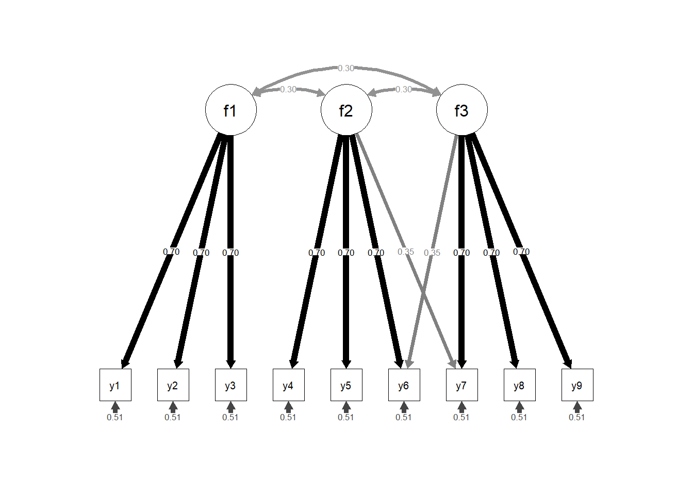
Results
Test Data Generation
Univariate Statistics
First, we test the data generation process to ensure that the data match the models we believe we are testing.
To examine the deviation from normality, we generated three datasets of size 1,000,000 for each of the three distributions (normal, moderately non-normal, severely non-normal).
Figure 3 shows the empirical distribution found from generating all 3 datasets of interest with a sample of N = 1,000,000 and combining all variables (so that each distribution is a sample of 9,000,000). Table 1 shows the mean, standard deviation, median, skew and kurtosis statistics from the same dataset.
These values are a match the correct values, showing that the data generating process we described is working as intended [That’s not well phrased. Fix.]
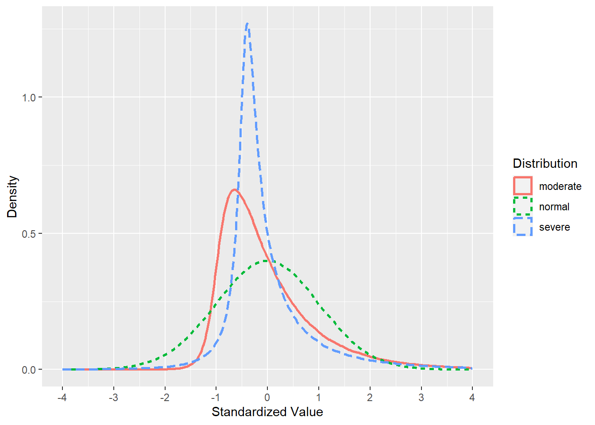
| mean | sd | median | skew | kurtosis | |
|---|---|---|---|---|---|
| Normal | 1.03e-17 | 1 | -0.001 | 0.004 | 0.002 |
| Moderate | 1.19e-17 | 1 | -0.260 | 2.006 | 6.980 |
| Severe | -6.76e-18 | 1 | -0.252 | 3.026 | 21.371 |
Correlations
In this section we examine the empirical correlations for data with N = 1,000,000 to check that the empirical distributions match the expected population matrices.
The correlation matrices below are calculated from each of the 6 6 distributions (2 population models, 3 distributions) with a sample size of 1,000,000. The correlations match the values in the population (within 0.01).
| y1 | y2 | y3 | y4 | y5 | y6 | y7 | y8 | y9 | |
|---|---|---|---|---|---|---|---|---|---|
| y1 | 1.00 | 0.49 | 0.49 | 0.15 | 0.15 | 0.15 | 0.15 | 0.15 | 0.15 |
| y2 | 0.49 | 1.00 | 0.49 | 0.15 | 0.15 | 0.15 | 0.15 | 0.15 | 0.15 |
| y3 | 0.49 | 0.49 | 1.00 | 0.15 | 0.15 | 0.15 | 0.15 | 0.15 | 0.15 |
| y4 | 0.15 | 0.15 | 0.15 | 1.00 | 0.49 | 0.49 | 0.15 | 0.15 | 0.15 |
| y5 | 0.15 | 0.15 | 0.15 | 0.49 | 1.00 | 0.49 | 0.15 | 0.15 | 0.15 |
| y6 | 0.15 | 0.15 | 0.15 | 0.49 | 0.49 | 1.00 | 0.15 | 0.15 | 0.15 |
| y7 | 0.15 | 0.15 | 0.15 | 0.15 | 0.15 | 0.15 | 1.00 | 0.49 | 0.49 |
| y8 | 0.15 | 0.15 | 0.15 | 0.15 | 0.15 | 0.15 | 0.49 | 1.00 | 0.49 |
| y9 | 0.15 | 0.15 | 0.15 | 0.15 | 0.15 | 0.15 | 0.49 | 0.49 | 1.00 |
| y1 | y2 | y3 | y4 | y5 | y6 | y7 | y8 | y9 | |
|---|---|---|---|---|---|---|---|---|---|
| y1 | 1.00 | 0.49 | 0.49 | 0.15 | 0.15 | 0.15 | 0.15 | 0.15 | 0.15 |
| y2 | 0.49 | 1.00 | 0.49 | 0.15 | 0.15 | 0.15 | 0.15 | 0.15 | 0.15 |
| y3 | 0.49 | 0.49 | 1.00 | 0.15 | 0.15 | 0.15 | 0.15 | 0.15 | 0.15 |
| y4 | 0.15 | 0.15 | 0.15 | 1.00 | 0.49 | 0.49 | 0.15 | 0.15 | 0.15 |
| y5 | 0.15 | 0.15 | 0.15 | 0.49 | 1.00 | 0.49 | 0.15 | 0.15 | 0.15 |
| y6 | 0.15 | 0.15 | 0.15 | 0.49 | 0.49 | 1.00 | 0.15 | 0.15 | 0.15 |
| y7 | 0.15 | 0.15 | 0.15 | 0.15 | 0.15 | 0.15 | 1.00 | 0.49 | 0.49 |
| y8 | 0.15 | 0.15 | 0.15 | 0.15 | 0.15 | 0.15 | 0.49 | 1.00 | 0.49 |
| y9 | 0.15 | 0.15 | 0.15 | 0.15 | 0.15 | 0.15 | 0.49 | 0.49 | 1.00 |
| y1 | y2 | y3 | y4 | y5 | y6 | y7 | y8 | y9 | |
|---|---|---|---|---|---|---|---|---|---|
| y1 | 1.00 | 0.49 | 0.49 | 0.15 | 0.15 | 0.15 | 0.15 | 0.15 | 0.15 |
| y2 | 0.49 | 1.00 | 0.49 | 0.15 | 0.15 | 0.15 | 0.15 | 0.15 | 0.15 |
| y3 | 0.49 | 0.49 | 1.00 | 0.15 | 0.15 | 0.15 | 0.15 | 0.15 | 0.15 |
| y4 | 0.15 | 0.15 | 0.15 | 1.00 | 0.49 | 0.49 | 0.15 | 0.15 | 0.15 |
| y5 | 0.15 | 0.15 | 0.15 | 0.49 | 1.00 | 0.49 | 0.15 | 0.15 | 0.15 |
| y6 | 0.15 | 0.15 | 0.15 | 0.49 | 0.49 | 1.00 | 0.15 | 0.14 | 0.15 |
| y7 | 0.15 | 0.15 | 0.15 | 0.15 | 0.15 | 0.15 | 1.00 | 0.49 | 0.49 |
| y8 | 0.15 | 0.15 | 0.15 | 0.15 | 0.15 | 0.14 | 0.49 | 1.00 | 0.49 |
| y9 | 0.15 | 0.15 | 0.15 | 0.15 | 0.15 | 0.15 | 0.49 | 0.49 | 1.00 |
| y1 | y2 | y3 | y4 | y5 | y6 | y7 | y8 | y9 | |
|---|---|---|---|---|---|---|---|---|---|
| y1 | 1.00 | 0.49 | 0.49 | 0.15 | 0.15 | 0.19 | 0.20 | 0.15 | 0.15 |
| y2 | 0.49 | 1.00 | 0.49 | 0.15 | 0.15 | 0.19 | 0.20 | 0.15 | 0.15 |
| y3 | 0.49 | 0.49 | 1.00 | 0.15 | 0.15 | 0.20 | 0.20 | 0.15 | 0.15 |
| y4 | 0.15 | 0.15 | 0.15 | 1.00 | 0.49 | 0.50 | 0.35 | 0.15 | 0.15 |
| y5 | 0.15 | 0.15 | 0.15 | 0.49 | 1.00 | 0.50 | 0.35 | 0.15 | 0.15 |
| y6 | 0.19 | 0.19 | 0.20 | 0.50 | 0.50 | 1.00 | 0.53 | 0.35 | 0.35 |
| y7 | 0.20 | 0.20 | 0.20 | 0.35 | 0.35 | 0.53 | 1.00 | 0.50 | 0.50 |
| y8 | 0.15 | 0.15 | 0.15 | 0.15 | 0.15 | 0.35 | 0.50 | 1.00 | 0.49 |
| y9 | 0.15 | 0.15 | 0.15 | 0.15 | 0.15 | 0.35 | 0.50 | 0.49 | 1.00 |
| y1 | y2 | y3 | y4 | y5 | y6 | y7 | y8 | y9 | |
|---|---|---|---|---|---|---|---|---|---|
| y1 | 1.00 | 0.49 | 0.49 | 0.15 | 0.15 | 0.20 | 0.20 | 0.15 | 0.15 |
| y2 | 0.49 | 1.00 | 0.49 | 0.15 | 0.15 | 0.19 | 0.19 | 0.15 | 0.15 |
| y3 | 0.49 | 0.49 | 1.00 | 0.15 | 0.15 | 0.20 | 0.20 | 0.15 | 0.15 |
| y4 | 0.15 | 0.15 | 0.15 | 1.00 | 0.49 | 0.50 | 0.35 | 0.15 | 0.15 |
| y5 | 0.15 | 0.15 | 0.15 | 0.49 | 1.00 | 0.50 | 0.35 | 0.15 | 0.15 |
| y6 | 0.20 | 0.19 | 0.20 | 0.50 | 0.50 | 1.00 | 0.53 | 0.35 | 0.35 |
| y7 | 0.20 | 0.19 | 0.20 | 0.35 | 0.35 | 0.53 | 1.00 | 0.50 | 0.50 |
| y8 | 0.15 | 0.15 | 0.15 | 0.15 | 0.15 | 0.35 | 0.50 | 1.00 | 0.49 |
| y9 | 0.15 | 0.15 | 0.15 | 0.15 | 0.15 | 0.35 | 0.50 | 0.49 | 1.00 |
| y1 | y2 | y3 | y4 | y5 | y6 | y7 | y8 | y9 | |
|---|---|---|---|---|---|---|---|---|---|
| y1 | 1.00 | 0.49 | 0.49 | 0.15 | 0.15 | 0.20 | 0.20 | 0.15 | 0.15 |
| y2 | 0.49 | 1.00 | 0.49 | 0.15 | 0.15 | 0.19 | 0.19 | 0.15 | 0.15 |
| y3 | 0.49 | 0.49 | 1.00 | 0.15 | 0.15 | 0.20 | 0.20 | 0.15 | 0.15 |
| y4 | 0.15 | 0.15 | 0.15 | 1.00 | 0.49 | 0.50 | 0.35 | 0.15 | 0.15 |
| y5 | 0.15 | 0.15 | 0.15 | 0.49 | 1.00 | 0.50 | 0.35 | 0.15 | 0.15 |
| y6 | 0.20 | 0.19 | 0.20 | 0.50 | 0.50 | 1.00 | 0.53 | 0.35 | 0.35 |
| y7 | 0.20 | 0.19 | 0.20 | 0.35 | 0.35 | 0.53 | 1.00 | 0.50 | 0.50 |
| y8 | 0.15 | 0.15 | 0.15 | 0.15 | 0.15 | 0.35 | 0.50 | 1.00 | 0.49 |
| y9 | 0.15 | 0.15 | 0.15 | 0.15 | 0.15 | 0.35 | 0.50 | 0.49 | 1.00 |
Model Fit Comparison
In this section we compare the model fit results we obtained with those presented in the CWF paper.
Model 1: Correct Specification
Figure 4 shows the mean chi-squares obtained in the CWF paper and the current simulation. The values for the ML and SB chi-squares are very similar. However the ADF/WLS estimates are discrepant, and the discrepancy is larger with smaller sample sizes and greater departure from normality. At sample sizes 500 and above the chi-square differences are all around 1 point or less, but at smaller sample sizes, the differences increase. In the sample size of 100, when the distribution is normal, the difference in chi-squares is 3.6, with moderately non-normal it is 7.2 and severely non-normal the difference increases to 15.6. the
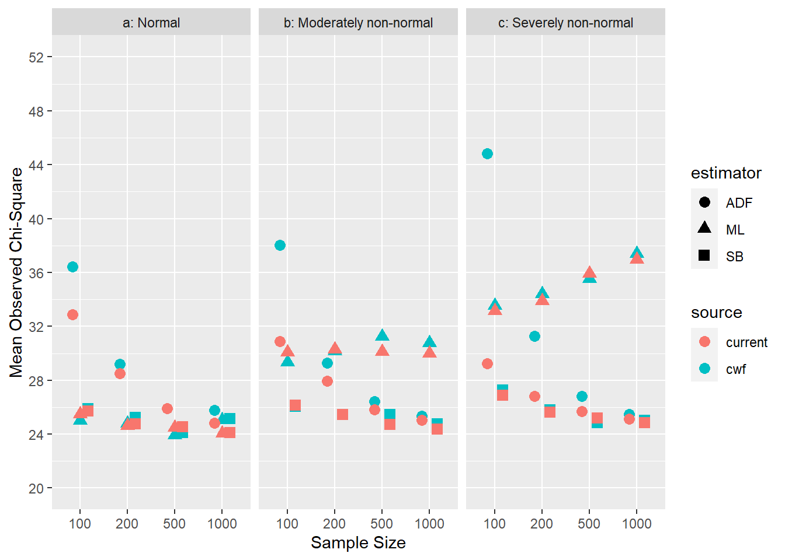
The story is repeated when we consider rejection rates, shown in Figure 5. Proportion of models were p < 0.05 is very similar for ML and SB, but there are quite dramatic differences in rejection rates for ADF/WLS at smaller samples, with CWF finding higher rejection rates with small samples, and this difference increases as the degree of non-normality increases.
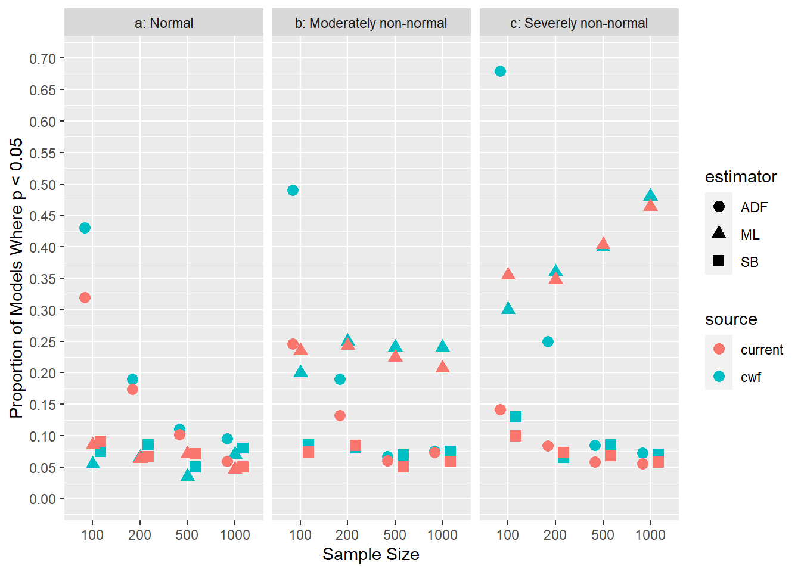
Model 2: Inclusion Misspecification
Figure 6 shows the mean chi-squares obtained in the CWF paper and the current simulation for model 2 (which had a misspecification of inclusion). These results are substantively equivalent to those for model 1: SB and ML are similar, ADF/WLS is larger in CWF, and the differences are larger with smaller sample sizes and greater deviation from normality.
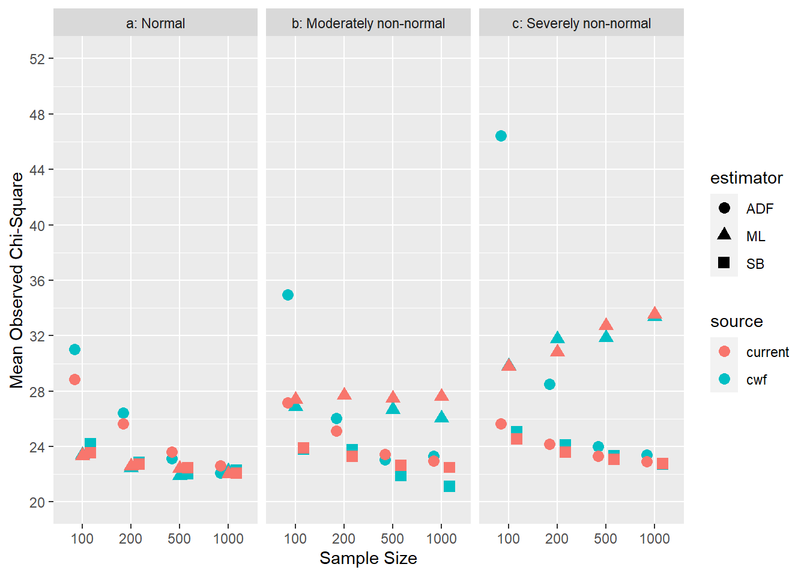
Differences in rejection rates for model 2 reflect those of model 1, as shown in Figure 7. Rejection rates were found to be higher in the CWF paper than in the current simulation, for small samples and deviation from normality.
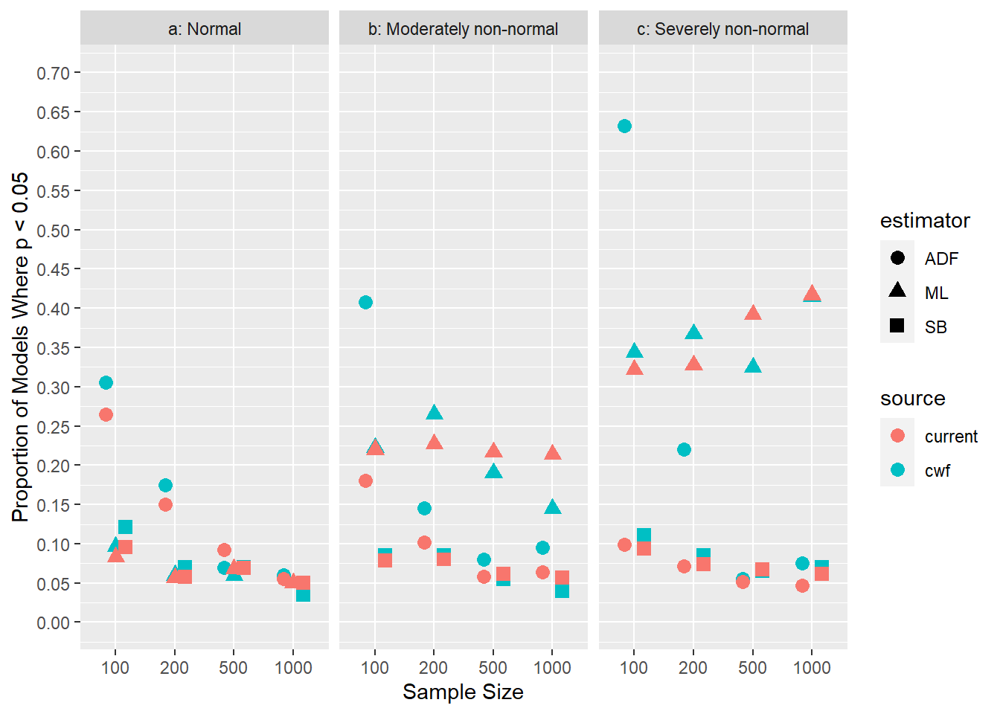
Model 3: Exclusion Misspecification
Figure 8 shows the mean chi-squares obtained in the CWF paper and the current simulation for model 3 (which had a misspecification of exclusion). Here we see larger differences between the current simulation and those presented in CWF. The CWF paper has larger average chi-squares than we found, but this difference is consistent for all three estimators, but larger for the ADF/WLS estimator than ML and SB. Unlike the previous models, the discrepancies are also larger in larger sample sizes.
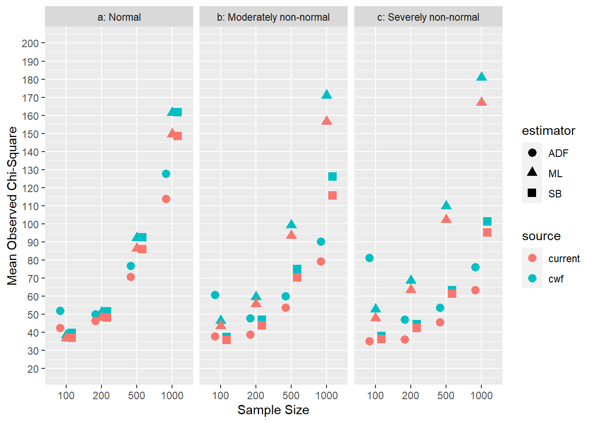
The differences in rejection rates for model 3 are consistent with the differences chi-square statistics, and can be seen in Figure 9. At larger sample sizes the rejection rates essentially asymptote at 1, hence differences are not seen, but at smaller sample sizes the discrepancies between the models is large.
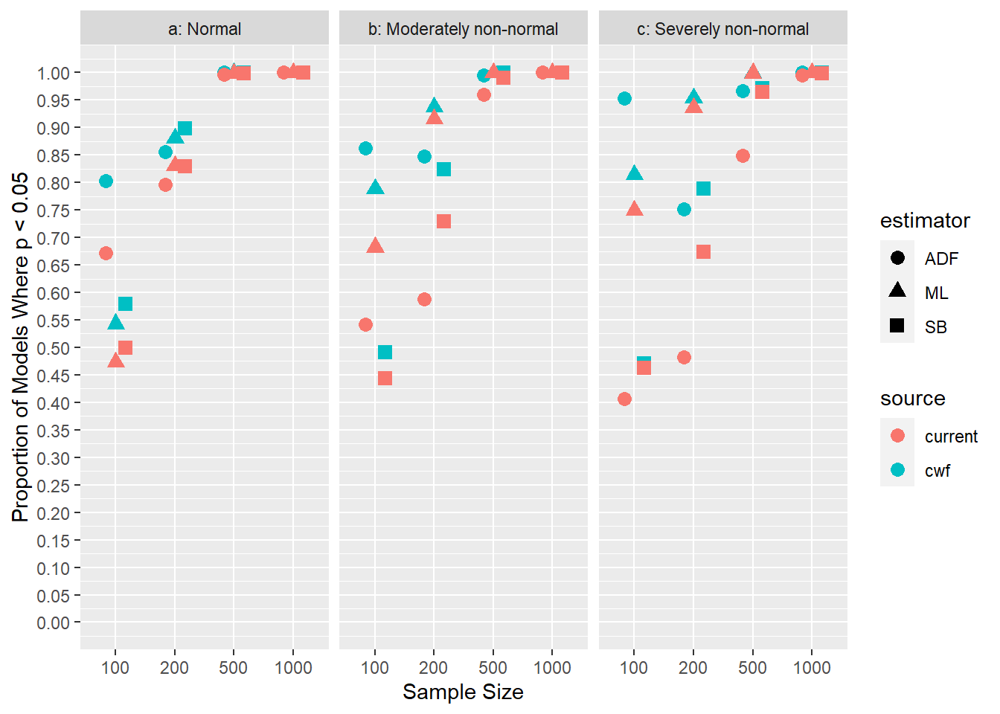
Model 4: Exclusion and Inclusion Misspecification
Figure 8 shows the mean chi-squares obtained in the CWF paper and the current simulation for model 3 (which had a misspecification of exclusion). Here we see larger differences between the current simulation and those presented in CWF. The CWF paper has larger average chi-squares than we found, but this difference is consistent for all three estimators, but larger for the ADF/WLS estimator than ML and SB. Unlike the previous models, the discrepancies are also larger in larger sample sizes.
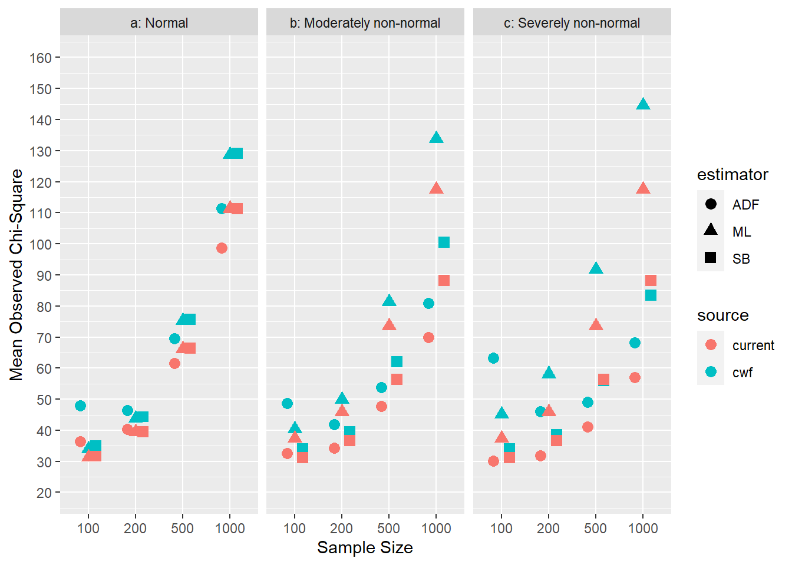
The differences in rejection rates for model 3 are consistent with the differences chi-square statistics, and can be seen in Figure 9. At larger sample sizes the rejection rates essentially asymptote at 1, hence differences are not seen, but at smaller sample sizes the discrepancies between the models is large.
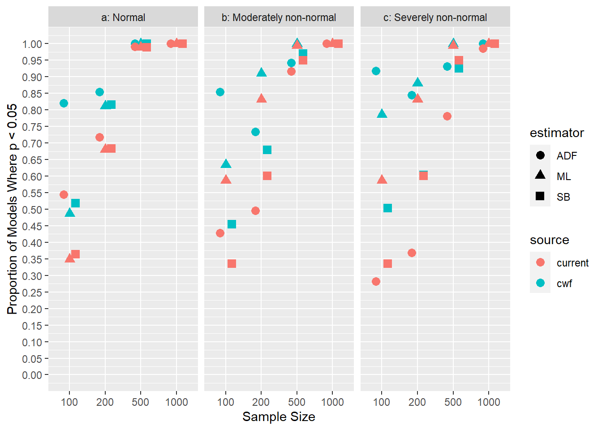
Expected Values of Chi-Square
The Satorra-Saris (Satorra & Saris, 1985) method can be used to calculate the expected value of chi-square, given ML estimation and normally distributed data. For models 1 and 2 this value is trivial to calculate, as the models are correctly specified (or when they are incorrect, the error is one of inclusion) hence the expected chi-square values are equal to the degrees of freedom in the model. For models 3 and 4 we calculate the expected values of chi-square using the Satorra-Saris method (which is described in more detail in CWF).
The expected values that we calculate are consistently lower than the expected values calculated by CWF. It appears that for each simulation (this one, and CWF), the expected values of chi-square are a closer match to the mean observed value. For example, for Model 3, sample size 100, the current study’s calculated expected value of chi-square is 36.45 and the mean observed value is 36.84; for CWF, the expected value is 37.62 and the observed is 38.45. For model 4, sample size 1000, current study expected: 110.44, observed 111.37, for CWF the values are 128.20 and 128.71.
| n | Model 3: Current Study | Model 3: CWF | Model 4: Current Study | Model 4: CWF |
|---|---|---|---|---|
| 100 | 36.45 | 37.62 | 30.84 | 32.52 |
| 200 | 48.91 | 51.38 | 39.69 | 43.14 |
| 500 | 86.27 | 92.66 | 66.22 | 75.04 |
| 1000 | 148.54 | 161.35 | 110.44 | 128.20 |
One possible explanation for this discrepancy is that the error variances were misreported in Figure 1 of CWF. Figure 1 of CWF shows that each of the measured variables has a residual variance of 0.51 in both the model with and without the cross loadings. If this is the case, when the cross loading is added to the model, the variance of the item must increase.
The CFA model presented in Figure 1 of the paper suggests that in the population models without cross loadings, the variance of all items is 1.00, but in the models with cross loadings, the variance of items 6 and 7 increases to 1.269, while all of the other items have variances equal to 1.
To test this hypothesis, we modified the population model so that the residual variances of items 6 and 7 were not 0.51 in the population model, but were 0.25. This change meant that the implied variances of all of the items was 1.00. The path diagram, drawn from the model, is shown in Figure 12, and the calculated expected values of chi-square from the modified model alongside the values presented in CWF are shown in Table 9.
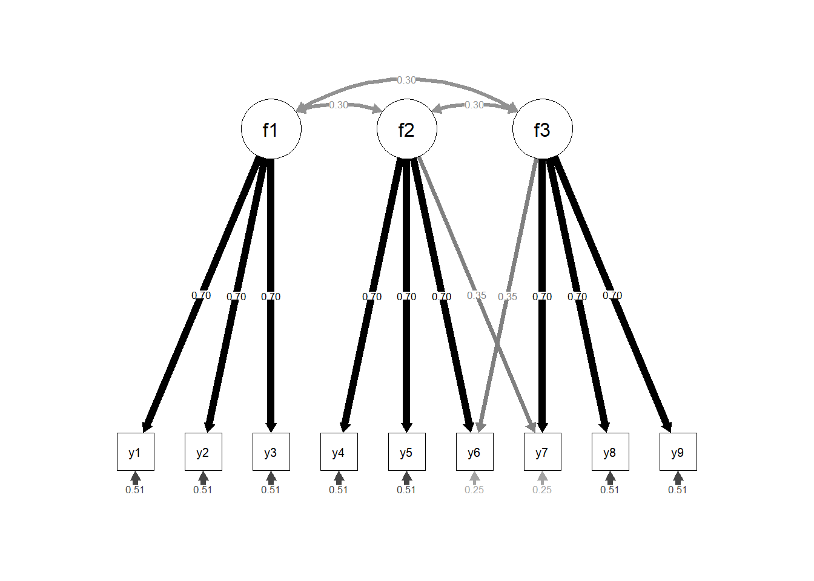
| n | Model 3: Modified | Model 3: CWF | Model 4: Modified | Model 4: CWF |
|---|---|---|---|---|
| 100 | 37.97 | 37.62 | 32.62 | 32.52 |
| 200 | 51.95 | 51.38 | 43.24 | 43.14 |
| 500 | 93.87 | 92.66 | 75.09 | 75.04 |
| 1000 | 163.73 | 161.35 | 128.19 | 128.20 |
Discussion
In this paper we replicated, as precisely as possible, a simulation study originally presented by Curran et al. (1996). Where the data generation and analysis was done using EQS 3.0, we used the R packages simsem and Lavaan.
Overall, our results were substantively similar and the conclusions about the appropriateness of the different estimators would not have been altered by the differences between our results.
However, there were consistent differences between the results, which were intriguing. The chi-square values obtained in the original paper were consistently higher than the results that we obtained, for almost all estimators at all sample sizes. When we compared the expected chi-squares, which are calculation based, not simulation based, these differences remained - the expected chi-square values of Curran, et al, were similar to the obtained chi-square values that they found via simulation. The expected chi-square values that we calculated were more similar to the obtained chi-square values that we found via simulation.
We believe that this difference may be due to an error in the presentation in a figure in the table. Residual variances were possibly erroneously reported as being equal in all models, where in models with cross loadings, these residual variances may have been reduced. The change in residual variance is easy to overlook as this is not a part of the model that one is generally particularly interested in, and we rarely make or test hypotheses about the estimates of residual variances.
However, this exercise leads us to some conclusions. Presenting a simulation study in sufficient detail in a conventional journal article that it can be replicated precisely is challenging - if authors do not share the code, it can be difficult for others to replicate and thereby confirm (or at least support) the results. Sharing code was not straightforward in 1996, but now we have websites like Github, which support sharing of code, and osf.io, which support sharing of code and other information.
In this paper we have used the semPlot package (Epskamp, 2022) to draw path diagrams based on the models that we fitted. Although we believe that we can draw path diagrams that are more esthetically pleasing using other programs, the use of semPlot (or similar software) which takes the fitted model as input and draws output ensures that the path diagram matches the models.
Finally, the experience of carrying out this work has shown that, for us at least, it is very difficult to fully evaluate a simulation study by reading it, and not replicating it. The authors of CWF acknowledge both Peter Bentler and Douglas Bonett - SEM practitioners and researchers that one would generally defer to, but it appears that neither of these researchers noted the omission of the change in the residual variances. In addition, if any of the 7000+ authors who have cited this paper have made this connection, it has not been brought to our attention.
References
Carsey, T. M., & Harden, J. J. (2013). Monte carlo simulation and resampling methods for social science. Sage Publications.
Curran, P. J., West, S. G., & Finch, J. F. (1996). The robustness of test statistics to nonnormality and specification error in confirmatory factor analysis. Psychological methods, 1(1), 16.
Epskamp, S. (2022). semPlot: Path diagrams and visual analysis of various SEM packages’ output. Retrieved from https://CRAN.R-project.org/package=semPlot
Hu, L., & Bentler, P. M. (1999). Cutoff criteria for fit indexes in covariance structure analysis: Conventional criteria versus new alternatives. Structural equation modeling: a multidisciplinary journal, 6(1), 1–55.
Kline, R. B. (2023). Principles and practice of structural equation modeling. Guilford publications.
Lohmann, A., Astivia, O. L., Morris, T. P., & Groenwold, R. H. (2022). It’s time! Ten reasons to start replicating simulation studies. Frontiers in Epidemiology, 2, 973470.
Pornprasertmanit, S., Miller, P., Schoemann, A., & Jorgensen, T. D. (2021). Simsem: SIMulated structural equation modeling. Retrieved from https://CRAN.R-project.org/package=simsem
Rigdon, E. E., & Ferguson Jr, C. E. (1991). The performance of the polychoric correlation coefficient and selected fitting functions in confirmatory factor analysis with ordinal data. Journal of marketing research, 28(4), 491–497.
Rosseel, Y. (2012). lavaan: An R package for structural equation modeling. Journal of Statistical Software, 48(2), 1–36.
Satorra, A., & Saris, W. E. (1985). Power of the likelihood ratio test in covariance structure analysis. Psychometrika, 50, 83–90.
Schoenbrodt, F. (2023). Reproducibility in methodological research: Modelling and improving epistemic uncertainty. University of Gent, Belgium: European Association of Methodology.
Schonbrodt, F., Perugini, M., et al. (2018). Corrigendum to “at what sample size do correlations stabilize?”[j. Res. Pers. 47 (2013) 609–612](S0092656613000858)(10.1016/j. Jrp. 2013.05. 009).
Strobl, C. (2023). Bringing owls to athens: Some thoughts on what makes a good simulation study in methodological research. University of Gent, Belgium: European Association of Methodology.
Whittaker, T. A., Fitzpatrick, S. J., Williams, N. J., & Dodd, B. G. (2003). IRTGEN: A SAS macro program to generate known trait scores and item responses for commonly used item response theory models. Applied Psychological Measurement, 27(4), 299–300.